S7-1200 V4.0 及以上固件版本的 CPU 支持智能 IO 设备功能，故可使用 S7-1200 作为智能 IO 设备和 CP343-1 进行 Profinet 通信。本例中将 CP343-1 作为 IO 控制器，连接作为智能 IO 设备的 S7-1200 CPU 实现 Profinet 通信；下面详细介绍使用方法。
CP343-1 版本要求：
硬件：
软件：
CP343-1 的 PN 接口连接 S7-1200 的 PN 接口，这种方式可以分 3 种情况来操作，具体如下：
CP343-1 作为 IO 控制器，CPU 1215C 作为 IO 设备，使用 TIA PORTAL 在一个项目中编程，详细步骤如下。
使用 TIA PORTAL 创建一个新项目，并通过"添加新设备"组态 S7-300 站 PLC_1，选择 CPU 315-2 PN/DP， 添加 CP343-1， 并设置 IP 地址， 确认设备名称，本示例中设备名称是 plc_1.cp343-1_1，如图 1 所示。
图 1. 在新项目中插入 S7-300 站
在“操作模式”选项中确认 CP343-1 的操作模式。 如图 2 所示。
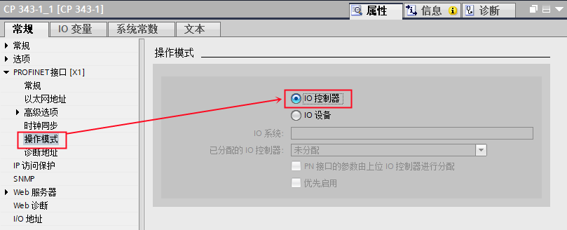
图 2. 选择 CP343-1 操作模式
使用 TIA PORTAL 创建一个新项目，并通过“添加新设备”组态 S7-1200 站 PLC_2，选择 CPU 1215C DC/DC/DC；设置 IP 地址，并确认设备名称，本示例中设备名称是 PLC_2。如图 3 所示。

图 3. 在新项目中插入 S7-1200 站
S7-1200 作为 IO 设备，需要将其操作模式设置为 IO 设备，并将 IO 设备分配给控制器 PLC_1.CP343-1_1。如图 4 所示。

图 4. S7-1200 设置为 IO 设备
然后，在“智能设备通信”的“传输区”创建 IO 通信区，控制器的 QB10~14 共计 5 个字节传送到 IO 设备的 IB10~14 ；控制器的 IB10~14 共计 5 个字节读取来自 IO 设备的 QB10~14。如图 5 所示。
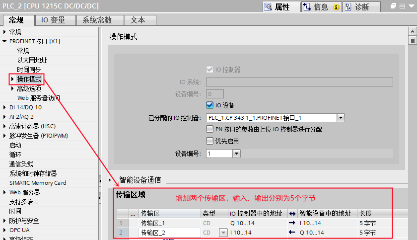
图 5. 创建 IO 通信区
本例中，CP343-1 作为 IO 控制器，需要在 OB1 中编程调用 PNIO_SEND 和 PNIO_RECV 进行数据读写。如图 6 所示。

图 6. CPU 315 中编程
| CALL “PNIO_SEND” | ||
| CPLADDR | ：=256 | // CP 模板起始地址 |
| MODE | ：=0 | // 工作模式： |
| LEN | ：=15 | // 要发送的数据区长度；该长度始终是从数据区地址 0 开始计算 |
| SEND | ：=P#M100.0 BYTE 15 | // 发送数据区 |
| IOCS | ：=P#M150.0 BYTE 10 | // 每一用户数据字节传送一个状态位。长度信息取决于 LEN 参数中的长度。 |
| DONE | ：=%M0.0 | // 为 1 时，无错误完成该作业 |
| ERROR | ：=%M0.1 | // 为 1 时，有故障发生 |
| STATUS | ：=%MW2 | // 状态代码 |
| CHECK_IOCS | ：=%M0.3 | // 0：所有 IOCS 均设置为 GOOD |
| CALL “PNIO_RECV” | ||
| CPLADDR | ：=256 | // CP 模板起始地址 |
| MODE | ：=0 | // 工作模式： 当 CP343-1 仅作为 IO 控制器或 IO 设备时，设为 0； 当 CP343-1 同时作为 IO 控制器和 IO 设备时，设为 1 |
| LEN | ：=15 | // 要接收的数据区长度；该长度始终是从数据区地址 0 开始计算 |
| RECV | ：=P#M200.0 BYTE 15 | // 发送数据区 |
| IOPS | ：=P#M250.0 BYTE 10 | // 每一用户数据字节传送一个状态位。长度信息取决于 LEN 参数中的长度。 |
| NDR | ：=%M1.0 | // 为 1 时，无错误完成该作业 |
| ERROR | ：=%M1.1 | // 为 1 时，有故障发生 |
| STATUS | ：=%MW4 | // 状态代码 |
| CHECK_IOPS | ：=%M1.2 | // 0：所有 IOPS 均设置为 GOOD |
| ADD_INFO | ：=%MW6 | // 附加诊断信息；具体请查看指令帮助信息 |
CPU 315-2 PN/DP 作为 IO 控制器，需要调用 OB83 和 OB86（防止控制器无法正常连接作为 IO 设备的 S7-1200 时，出现的停机现象），如图 7 所示。

图 7. 编程调用 OB83 和 OB86
检查无错误后，最后分别将 PLC_1 站和 PLC_2 站下载到各自的 PLC 中。
分别给两个站点新建监控表，添加通信数据区，监控。如图 8 所示。

图 8. 通信测试
CP343-1 作为 IO 控制器时，其传送地址需从 0 开始，地址对应排列关系以逻辑地址大小为序，当地址出现间隔时，没有组态的地址也将被传送，如图 9 所示，没有组态的地址区 IB0~9（QB0~9) 及其对应的 MB100~109(MB200~209) 也将被传送，因此在编写程序时 LEN 管脚对应在数据长度为 15，而不是 5，SEND 及 RECV 管脚对应的数据区也为 15 个字节，而不是 5 个字节。
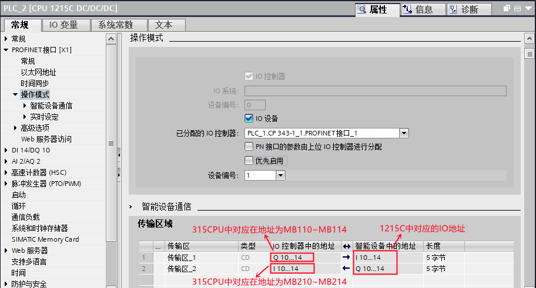
图 9. 地址对应关系
CP343-1 作为 IO 控制器，CPU 1215C 作为 IO 设备，使用 TIA PORTAL 在不同项目中编程，详细步骤如下。
使用 TIA PORTAL 创建一个新项目，并通过“添加新设备”组态 S7-1200 站 IO 设备，选择 CPU 1215C DC/DC/DC；设置 IP 地址，并确认设备名称，本示例中设备名称是 io-device。如图 10 所示。
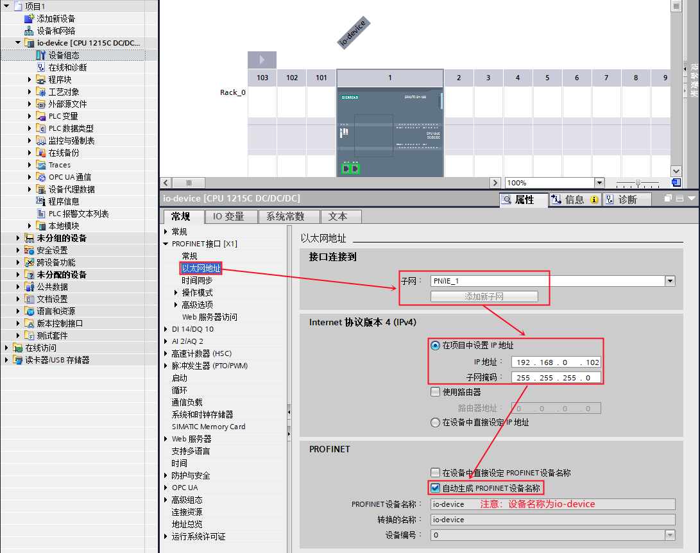
图 10. 在新项目中插入 S7-1200 站
S7-1200 作为 IO 设备，需要将其操作模式设置为 IO 设备。如图 11 所示。

图 11. S7-1200 设置为 IO 设备，并创建 IO 通信区
然后，在“智能设备通信”的“传输区”创建 IO 通信区，控制器将传输 5 个字节到 IO 设备的 IB10~14 ；IO 设备将 QB10~14 共计 5 个字节传送给控制器。
编译该项目，在“智能设备通信”属性的下方，找到并点击“导出”按钮，根据提示将 GSD 文件导出（注意不要修改设备名称）。如图 12 所示。

图 12. 导出 IO 设备的 GSD 文件
使用 TIA PORTAL 创建一个新项目，并组态 CPU 315-2 PN/DP， 添加 CP343-1 ，设置 IP 地址，并确认设备名称，本示例中设备名称是 plc_1.cp343-1_1。如图 13 所示。

图 13. 在项目中插入 S7-300 站
在 TIA PORTAL 的硬件组态界面，通过“选项”进入“管理通用站描述文件（GSD）”界面， 在源路径选择 IO 设备 的 GSD 文件存放路径。如图 14 所示。

图 14. TIA PORTAL 安装 IO 设备 的 GSD 文件
在 TIA PORTAL 的网络视图中，将硬件目录路径：Other field devices（其他现场设备）--> PROFINET IO-->PLCs&CPs-->SIEMENS AG--> CPU 1215C DC/DC/DC --> io-device 拖拽到网络视图中，如图 15 所示。

图 15. 插入 Profinet IO 系统
然后为 IO 设备分配 IO 控制器，如图 16 所示。
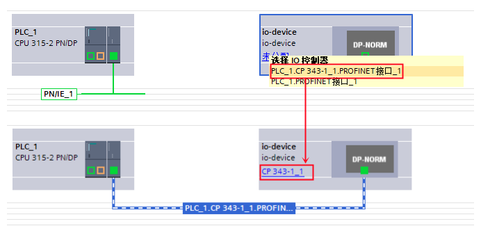
图 16. 分配 IO 控制器
进入到设备视图中的设备概览设置传输区地址，如图 17 所示。
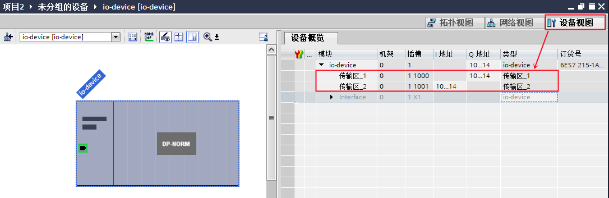
图 17. 分配传输区地址
本例中，CP343-1 作为 IO 控制器，需要在 OB1 中编程调用 PNIO_SEND 和 PNIO_RECV 进行数据读写。如图 18 所示。
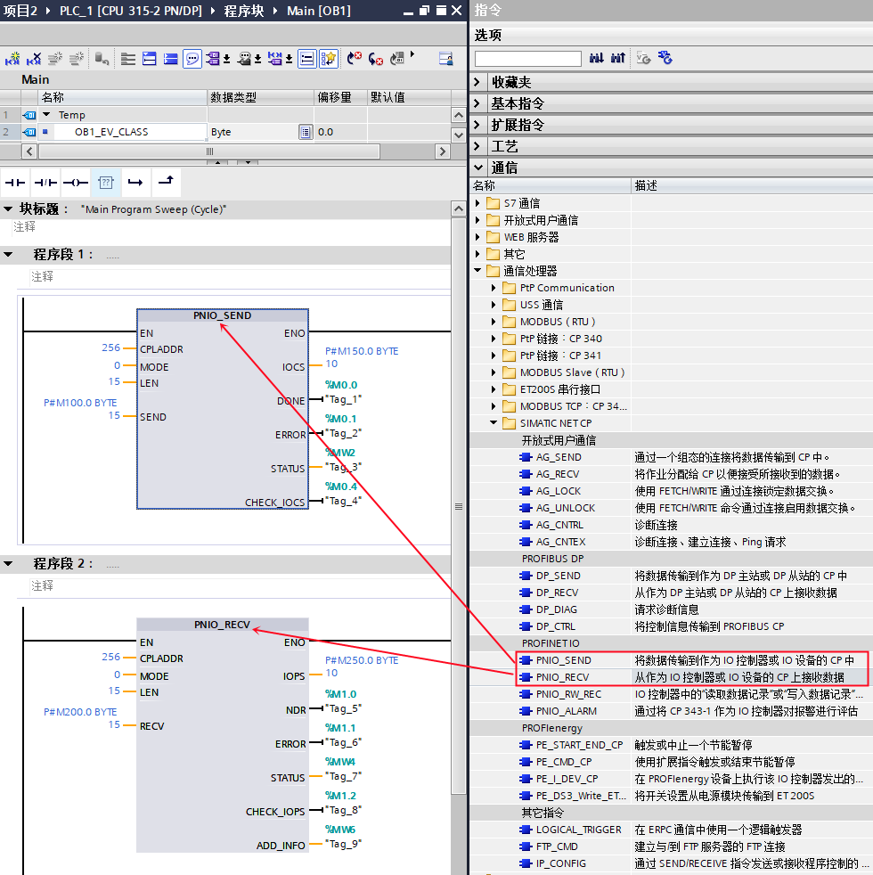
图 18. CPU 315 中编程
| CALL “PNIO_SEND” | ||
| CPLADDR | ：=256 | // CP 模板起始地址 |
| MODE | ：=B#16#0 | // 工作模式： 当 CP343-1 仅作为 IO 控制器或 IO 设备时，设为 0； 当 CP343-1 同时作为 IO 控制器和 IO 设备时，设为 1 |
| LEN | ：=15 | // 要发送的数据区长度；该长度始终是从数据区地址 0 开始计算 |
| SEND | ：=P#M100.0 BYTE 15 | // 发送数据区 |
| IOCS | ：=P#M150.0 BYTE 10 | // 每一用户数据字节传送一个状态位。长度信息取决于 LEN 参数中的长度。 |
| DONE | ：=%M0.0 | // 为 1 时，无错误完成该作业 |
| ERROR | ：=%M0.1 | // 为 1 时，有故障发生 |
| STATUS | ：=%MW2 | // 状态代码 |
| CHECK_IOCS | ：=%M0.3 | // 0：所有 IOCS 均设置为 GOOD |
| CALL “PNIO_RECV” | ||
| CPLADDR | ：=W#16#100 | // CP 模板起始地址 |
| MODE | ：=B#16#0 | // 工作模式： 当 CP343-1 仅作为 IO 控制器或 IO 设备时，设为 0； 当 CP343-1 同时作为 IO 控制器和 IO 设备时，设为 1 |
| LEN | ：=7 | // 要接收的数据区长度；该长度始终是从数据区地址 0 开始计算 |
| RECV | ：=P#M200.0 BYTE 15 | // 发送数据区 |
| IOPS | ：=P#M250.0 BYTE 10 | // 每一用户数据字节传送一个状态位。长度信息取决于 LEN 参数中的长度。 |
| NDR | ：=%M1.0 | // 为 1 时，无错误完成该作业 |
| ERROR | ：=%M1.1 | // 为 1 时，有故障发生 |
| STATUS | ：=%MW4 | // 状态代码 |
| CHECK_IOPS | ：=%M1.2 | // 0：所有 IOPS 均设置为 GOOD |
| ADD_INFO | ：=%MW6 | // 附加诊断信息；具体请查看指令帮助信息 |
CPU 315-2 PN/DP 作为控制器，需要调用 OB83 和 OB86（防止控制器无法正常连接作为 IO 设备的 S7-1200 时，出现的停机现象），如图 19 所示。

图 19.编程调用 OB83 和 OB86
检查无错误后，最后分别将两个站下载到各自的 PLC 中。
检查无错误后，分别给两个站点新建监控表，添加通信数据区，监控。如图 20 所示。
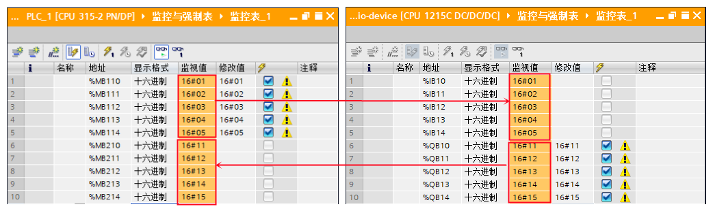
图 20. 通信测试
CP343-1 作为 IO 控制器时，其传送地址需从 0 开始，地址对应排列关系以逻辑地址大小为序，当地址出现间隔时，没有组态的地址也将被传送，如图 21 所示，没有组态的地址区 IB0~9（QB0~9) 及其对应的 MB100~109(MB200~209) 也将被传送，因此在编写程序时 LEN 管脚对应在数据长度为 15，而不是 5，SEND 及 RECV 管脚对应的数据区也为 15 个字节，而不是 5 个字节。
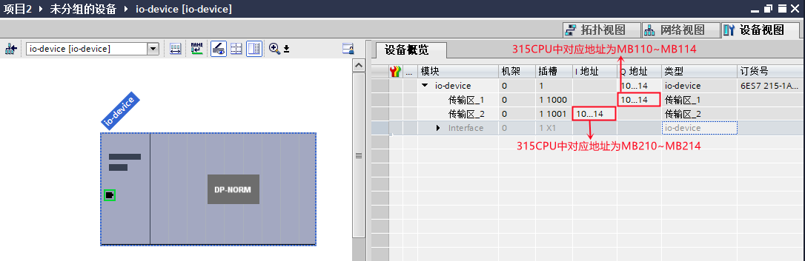
图 21. 地址对应关系
不在一个项目中的操作，即：CP343-1 作为 IO 控制器 使用 Step7 编程；CPU 1215C 作为 IO 设备，使用 TIA PORTAL 编程，详细步骤如下。
使用 TIA PORTAL 创建一个新项目，并通过“添加新设备”组态 S7-1200 站 IO 设备 ，选择 CPU 1215C DC/DC/DC；设置 IP 地址，并确认设备名称，本示例中设备名称是 io-device。如图 22 所示。

图 22. 在新项目中插入 S7-1200 站
S7-1200 作为 IO 设备，需要将其操作模式设置为 IO 设备。如图 23 所示。

图 23. S7-1200 设置为 IO 设备，并创建 IO 通信区
然后，在“智能设备通信”的“传输区”创建 IO 通信区，控制器将传输 5 个字节到 IO 设备的 IB10~14 ；IO 设备将 QB10~14 共计 5 个字节传送给控制器。
编译该项目，在“智能设备通信”属性的下方，找到并点击“导出”按钮，根据提示将 GSD 文件导出（注意不要修改设备名称）。如图 24 所示。
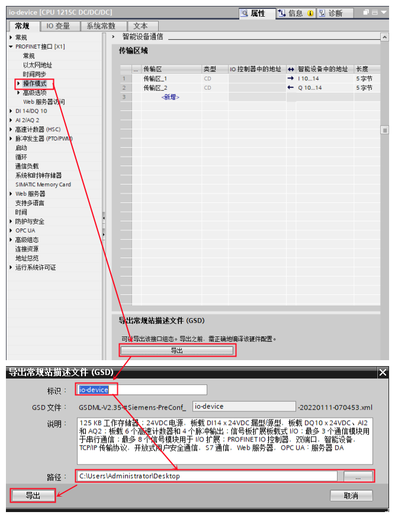
图 24. 导出 IO 设备的 GSD 文件
使用 Step7 创建一个新项目，并组态 CPU 315-2 PN/DP， 添加 CP343-1 ，设置 IP 地址，并确认设备名称，本示例中设备名称是 PN-IO。如图 25 所示。
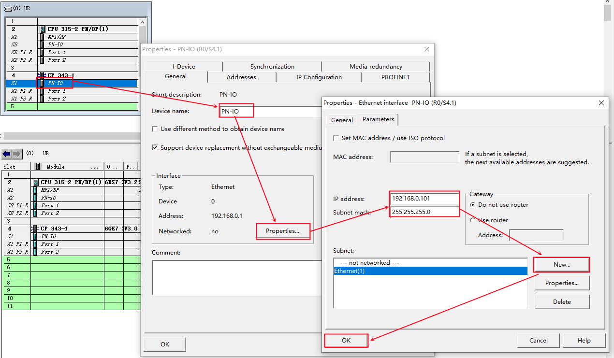
图 25. 在新项目中插入 S7-300 站
在 Step7 的硬件组态界面，通过“选项”进入“安装 GSD 文件...”界面， 在源路径选择 IO 设备的 GSD 文件存放路径。如图 26 所示。

图 26. Step7 安装 IO 设备的 GSD 文件
首先，需要给 CP343-1 插入 Profinet IO 子网，在 CP343-1 的“PN-IO”上鼠标右键，选择“插入 Profinet IO 系统”。如图 27 所示。

图 27. 插入 Profinet IO 系统
然后，从硬件目录路径：PROFINET IO --> Preconfigured Stations --> CPU 1215C DC/DC/DC --> io-device 拖拽到 PN 子网上。如图 28 所示。

图 28. 组态 IO 设备
本例中，CP343-1 作为 IO 控制器，需要在 OB1 中编程调用 PNIO_SEND 和 PNIO_RECV 进行数据读写。如图 29 所示。

图 29. CPU 315中编程
| CALL “PNIO_SEND” | ||
| CPLADDR | ：=W#16#100 | // CP 模板起始地址 |
| MODE | ：=B#16#0 | // 工作模式： 当 CP343-1 仅作为 IO 控制器或 IO 设备时，设为 0； 当 CP343-1 同时作为 IO 控制器和 IO 设备时，设为 1 |
| LEN | ：=15 | // 要发送的数据区长度；该长度始终是从数据区地址 0 开始计算 |
| SEND | ：=P#M100.0 BYTE 15 | // 发送数据区 |
| IOCS | ：=P#M150.0 BYTE 10 | // 每一用户数据字节传送一个状态位。长度信息取决于 LEN 参数中的长度。 |
| DONE | ：=%M0.0 | // 为 1 时，无错误完成该作业 |
| ERROR | ：=%M0.1 | // 为 1 时，有故障发生 |
| STATUS | ：=%MW2 | // 状态代码 |
| CHECK_IOCS | ：=%M0.3 | // 0：所有 IOCS 均设置为 GOOD |
| CALL “PNIO_RECV” | ||
| CPLADDR | ：=W#16#100 | // CP 模板起始地址 |
| MODE | ：=B#16#0 | // 工作模式： 当 CP343-1 仅作为 IO 控制器或 IO 设备时，设为 0； 当 CP343-1 同时作为 IO 控制器和 IO 设备时，设为 1 |
| LEN | ：=15 | // 要接收的数据区长度；该长度始终是从数据区地址 0 开始计算 |
| RECV | ：=P#M200.0 BYTE 15 | // 发送数据区 |
| IOPS | ：=P#M250.0 BYTE 10 | // 每一用户数据字节传送一个状态位。长度信息取决于 LEN 参数中的长度。 |
| NDR | ：=%M1.0 | // 为 1 时，无错误完成该作业 |
| ERROR | ：=%M1.1 | // 为 1 时，有故障发生 |
| STATUS | ：=%MW4 | // 状态代码 |
| CHECK_IOPS | ：=%M1.2 | // 0：所有 IOPS 均设置为 GOOD |
| ADD_INFO | ：=%MW6 | // 附加诊断信息；具体请查看指令帮助信息 |
CPU 315-2 PN/DP 作为控制器，需要调用 OB83 和 OB86（防止控制器无法正常连接作为 IO 设备的 S7-1200 时，出现的停机现象），如图 30 所示。
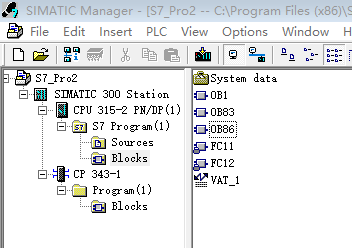
图 30. 编程调用 OB83 和 OB86
检查无错误后，最后分别将 PLC_1 站和 PLC_2 站下载到各自的 PLC 中。
分别给两个站点新建监控表，添加通信数据区，监控。如图 31 所示。

图 31. 通信测试
CP343-1 作为 IO 控制器时，其传送地址需从 0 开始，地址对应排列关系以逻辑地址大小为序，当地址出现间隔时，没有组态的地址也将被传送，如图 32 所示，没有组态的地址区 IB0~9（QB0~9) 及其对应的 MB100~109(MB200~209) 也将被传送，因此在编写程序时 LEN 管脚对应在数据长度为 15，而不是 5，SEND 及 RECV 管脚对应的数据区也为 15 个字节，而不是 5 个字节。
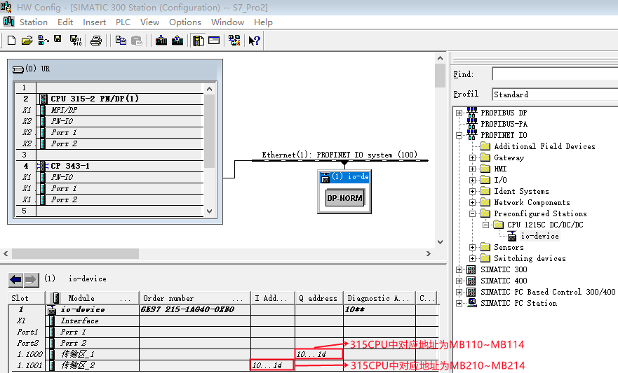
图 32. 地址对应关系